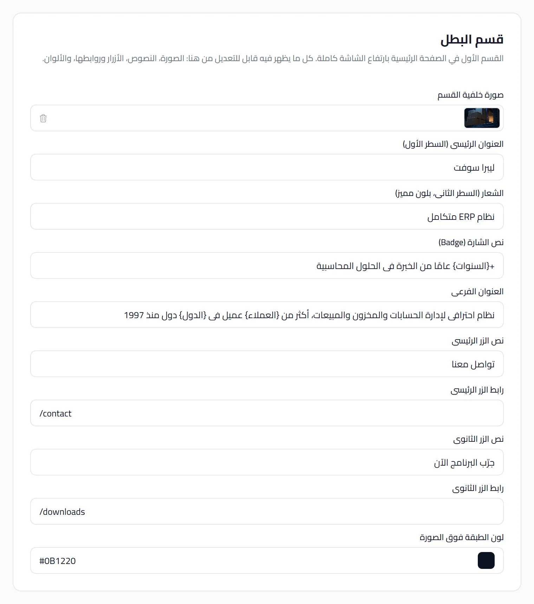
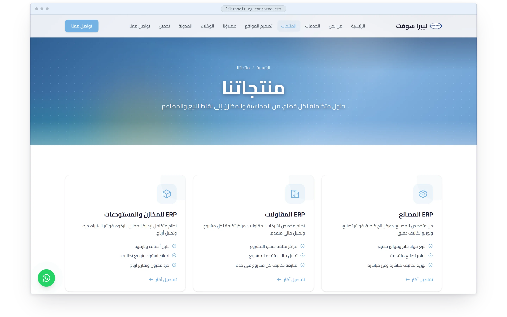
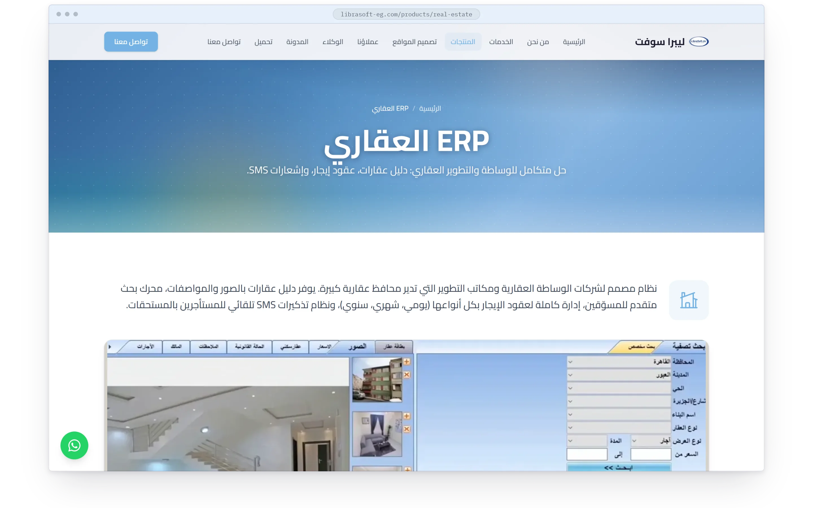

الفصل السادس · ليبرا سوفت
ليبرا سوفت LIBRASOFT
ليبرا سوفت. بيت برمجيات عمره تسعة وعشرون عاماً، وموقعٌ يعدّله بنفسه أخيراً.
الحركة الأولى · الموقع بيد صاحبه
الموقع بيد صاحبه

القصة
تسعة وعشرون عاماً من برمجيات المحاسبة، عشر نسخ من نظام محاسبي متكامل واحد على ويندوز، وموقع قديم ثابت: الطلب موقع عربي حديث يغيّره صاحبه من لوحة تحكم، ويجلب الطلبات.
عن الزبون
بيت برمجيات محاسبية مصري يعمل منذ 1997، عنده نظام محاسبي متكامل على ويندوز بعشر نسخ قطاعية وموقع قديم ثابت. الطلب: موقع عربي حديث تغيّره الشركة كلّه من لوحة تحكم بلا نشر، ويجلب الطلبات. بُني في نيسان، وأُعيد العمل عليه مع الزبون في آب، وهو حيّ منذ ذلك.
التحدي
- 01
كل شيء قابل للتعديل: نصوص بعدّادات حيّة، صور، تسعة ألوان بتدرّج مشتقّ، عشرة منتجات بمعارضها، مقالات، تنزيلات، من لوحة واحدة.
- 02
كتيّب لمنتج سطح مكتب: شاشات ويندوز القديمة كان عليها أن تعيش داخل صفحة حديثة من دون أن تبدو لقطات.
- 03
جولة زبون من ثمانية وعشرين تعديلاً في أربعة أيام، الهيرو ست مرات، كلٌّ منها يُقاس في المتصفح قبل أن يُعلَّم.
المنهج
نكست على كونفكس وإعدادات الموقع بيانات: تسعة رموز لون تكتبها اللوحة في الصفحة، هيرو عدّاداته رموز، أقسام مرسومة بالوسوم والشاشات القديمة مُعاد رسمها، ثلاث درجات وإسفين بينها، ودليل تشغيل للنشر.
دوري
مالك المنتج والمصمّم والمهندس الوحيد: وثيقة المتطلبات، الموقع، نظام إدارة المحتوى، النشر، وجولة الزبون.
الحركة الثانية · اثنا عشر قسماً، ثلاث درجات
اثنا عشر قسماً، ثلاث درجات
الصفحة الرئيسية اثنا عشر قسماً بثلاث درجات: الفحمي والسطح والأبيض، وإسفين عند كل تبديل. جولة المزايا تفتح ميزةً ميزة بجانب نافذة ويندوز القديمة مرسومةً بالوسوم، وشريط المنتجات يقلّب النسخ العشر على درجة السطح.

شاشة ويندوز القديمة، مرسومة بالوسوم لا لقطة
إسفين بين كل تبديل درجة

- 01
- 02
- 03
- 04
- 05
- 06
- 07
- 08
- 09
- 10
- 11
- 12
كل ما على الموقع بيد صاحبه: النص والصورة واللون والمنتج والمقال والملف. بلا نشر.
-
- #73B2E3الأساسي
- #C4DEF3فاتح
- #1D5E91غامق
-
- #D4A843الذهب
- #E0BC6Aفاتح
- #B8922Eغامق
-
- #1A1A2Eالفحمي
- #2D2D44فاتح
-
- #E6F1FAالسطح
الحركة الثالثة · عشر نسخ
عشر نسخ
برنامج محاسبي متكامل واحد لويندوز بعشر نسخ قطاعية. صفحة المنتجات تعدّها بطاقةً بطاقة، وصفحة كل نسخة تعرض البرنامج الحقيقي مقصوصاً لتلك النسخة في عارض، وتحته طلب العرض.

عشر نسخ قطاعية لبرنامج واحد

البرنامج الحقيقي، مقصوصاً لكل نسخة، في عارض
النتائج
عاماً، وأول موقع تعدّله الشركة بنفسها
تعديلاً في جولة زبون واحدة، كلٌّ يُقاس في المتصفح
نشرٍ لتغيير لون أو نص أو منتج
الفصل السادس · اكتمل
حقل الفصل التالي يغمر الشاشة